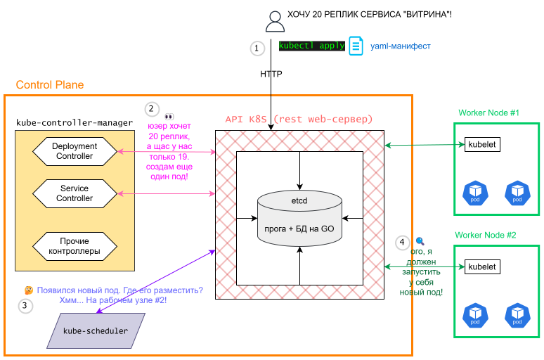
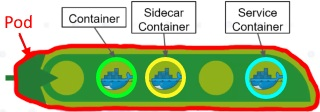

- Этот файл задумывался как единое место, в котором можно в целом
разобраться как работает кубер, какие в нем есть понятия и как они
связаны.
- Здесь больше теоретическая часть, нацеленная на формирование общей картины.
- При этом конечно по каждому объекту есть много настроек, про которые буду писать в отдельных файлах. Будет отдельный файл про Deployment, Service и т.д., которые буду постепенно заполнять по мере получения навыков и знаний.
- Могут быть какие-то технические огрехи и заблуждения, но я не ставлю цель описать все с хирургической точностью. Пишу до такой степени, чтобы можно было думать о теме. Постепенно буду косяки исправлять, если они будут всплывать.
Что такое kubernetes
Кубер- это оркестратор контейнеров.- P.S. “тачка” - это компьютер виртуальная машина.
- Докер работает в пределах отдельной тачки, может крутить на ней контейнер или несколько. Но не может, например, как-то объединить несколько тачек.
- А вот с помощью кубера мы можем как раз объединить несколько тачек с контейнерами в единый кластер и управлять ими централизовано. Например, подключить еще одну тачку, запустить на ней контейнер с сервисом и получить т.о. горизонтальное масштабирование сервиса.
- Кубер не привязан к докеру, может использовать и другие системы
контейнеризации.
- Нынче используется
containerd
- Нынче используется
kubectl
kubectl(Kubernetes ConTroL / ex “Cluster TooL”) - это консольная утилита для управления кластером кубера.- Через kubectl доступен самый полный набор команд для управления кубером.
Архитектура кубера

Узлы (Node)
Node(узел) - это отдельная виртуальная или физическая машина. Несколько узлов образуют кластер.- Разновидности узлов
Control-plane- узел-“менеджер”. Занимается управлением кластера, например, решает на каком узле запустить новый под.Worker-node- узел-“работяга”. На воркерах крутятся поды.
- Один и тот же узел технически может совмещать функции менеджера и
воркера. Это подходит для тестовых и учебных целей, но в проде эти роли
надо разделять по разным узлам.
- На менеджерских и рабочих узлах выполняются разные процессы.
Например, на менеджерах выполняется
kube-controller-manager,kube-scheduler, а на рабочих -kubelet,kube-proxy. За счет такого деления тачка не грузится лишними процессами.
- На менеджерских и рабочих узлах выполняются разные процессы.
Например, на менеджерах выполняется
- В проде обычно делают несколько менеджерских узлов для отказоустойчивости. Причем их количество должно быть нечетным (но это уже отдельная история, про кворумы).
Worker-узел
- На воркере работает три ключевых процесса:
Container Runtime(движок контейнеров) - за счет него на узле могут крутиться контейнеры.kube-proxy- сетевой агент, который отвечает за управление сетевым трафиком внутри этого узла. Отвечает за то, чтобы запрос дошел до нужного пода.kubelet- мониторит БД кубера на предмет того, а не появился ли, например, новый под, который требуется запустить на этом узле.
API Kubernetes, etcd, контроллеры, scheduler
API Kubernetes, etcd
- Ядро кубера - логически это REST веб-сервер
(
API Kubernetes) + БД (etcd) - Когда мы описываем через yaml какой-то объект кубера и “пушим” его в
кластер (через kubectl apply например), то по сути мы таким образом
отправляем HTTP-запрос на api kubernetes.
- Он валидирует этот yaml и если все в порядке, то создает в etcd (БД кубера) этот объект (или изменяет состояние существующего, если он уже создан).
- Например, мы описали в yaml Deployment, в котором указали “хочу такой-то контейнер запустить в 3х экземплярах” и запушили.
Контроллеры, желаемое и реальное состояние
- Для каждого типа объектов есть свой контроллер, который мониторит БД
на предмет изменения или появления новых объектов нужного типа.
- Все контроллеры являются частью процесса kube-controller-manager, и работают в отдельных потоках.
- Например, для объектов deployment есть Deployment Controller.
- Продолжая пример - контроллер деплоев сравнивает описание объекта, которое мы запушили, с реальным состоянием кластера. Видит, что мы хотели 3 реплики контейнера, а сейчас работают только 2.
- Тогда он создает в БД недостающие объекты, например поды (вообще там может быть более хитрая схема, когда контроллер создает какой-то объект, на него реагирует другой контроллер и т.д., это не особо важно, как это на самом деле работает).
- Далее в работу включается планировщик (
scheduler). Он вычисляет для размещения пода оптимальный узел и создает binding между подом и узлом. - На узлах работают kubelet’ы, которые тоже мониторят БД. Когда kubelet видит, что появился под, связанный с его узлом, то он поднимает этот под на своем узле.
Основные понятия
- Здесь в основном перечислены объекты кубера. Они не имеют “физического” представления в ОС, это просто записи в etcd, по которым кубер ориентируется, что ему делать с кластером.
Pod
Pod- минимальная единица развертывания в кубере.- Под не является процессом и физически как что-то самостоятельное не существует в ОС, это чисто логическое объединение процессов-контейнеров в единую группу.
- Под при запуске получает собственный ip-адрес, который может меняться от запуска к запуску, т.е. является нестабильным.
- Если под завершается, то завершаются и все процессы в нем.
- Поды как правило мы не запускаем непосредственно, а делаем это с
помощью других объектов кубера, например deployment
- Потому что обычно нужно чтобы за подом следили. Например, если он упадет, надо его перезапустить. Поскольку сам по себе под такого не умеет, нам и нужны вспомогательные объекты.
- На под можно навешивать метки (лейблы, label)
- С помощью меток другие объекты кубера могут различать поды и
понимать, что “ага, у этого пода есть метка X, значит я за него
отвечаю”.
- Так например работают деплойменты и сервисы.
- С помощью меток другие объекты кубера могут различать поды и
понимать, что “ага, у этого пода есть метка X, значит я за него
отвечаю”.
Контейнеры в поде
- В поде может крутиться несколько контейнеров.
- Все они запускаются на одном узле, в одних неймспейсах, разделяют
том, поэтому видят друг друга и могут общаться друг с другом
- Здесь имеются ввиду linux-неймспейсы, а не кубер-неймспейсы (куберовские неймспейсы это вообще отдельная вещь, никак не связанная с linux-неймспейсами)
- Контейнеры в поде с технической точки зрения равноправны.
- Технически нет никакого “главного” среди них.
- Однако логически принято следовать правилу “один под - один
бизнес-контейнер”, а остальные процессы являются
sidecar-контейнерами, т.е. выполняются вспомогательные функции, вроде логирования, какие-то инфраструктурные вещи и т.д.

Deployment
- Объект кубера, предназначенный для декларативного описания пода и
управления его жизненным циклом.
- Деплоймент и поды связываются через метки и за счет этого деплоймент знает, за какими подами он наблюдает.
- Через деплоймент мы можем указать, например, такое:
- Из каких образов мы хотим поднимать контейнеры в поде.
- Сколько копий (“реплик”) пода надо поднять. Например, хотим чтобы микросервис “Витрина” работал в 10 экземплярах, указываем нужное число в деплойменте, и вот у нас уже крутится 10 подов.
- Задать подам метки.
- Чем полезен деплоймент
- Если какой-то из подов упадет, деплоймент это обнаружит и поднимет новые поды, чтобы их количество совпадало с указанным.
- Если изменится версия образа (или вообще меняем образ на другой),
деплоймент обновит поды.
- Он умеет по-разному это делать, например может сделать “бесшовное обновление” (сначала поднимет новый под и когда тот будет готов, то остановит один старый, и так пока все поды не заменятся на новые) или может сначала остановить все старые поды и потом поднять новые. Про это можно отдельно почитать.
- Дополнительные факты
- Деплоймент работает не полностью самостоятельно, а в паре с
ReplicaSet
- Деплоймент работает не полностью самостоятельно, а в паре с
- Пример yaml для деплоймента:
# деплоймент
apiVersion: apps/v1
kind: Deployment
metadata:
name: product
spec:
replicas: 10 # <-- Сколько копий пода поднимать
selector:
matchLabels:
app: product # <-- За поды с какими метками отвечает этот деплоймент
template:
metadata:
labels:
app: product # <-- Какие метки навесить на поднимаемые поды
spec:
containers: # <-- Из каких образов поднимать контейнеры в поде
- name: product
image: ms-product
imagePullPolicy: Never
ports:
- name: foobar
containerPort: 8081
# или просто
# - containerPort: 8081Service
Service(сервис) - это объект кубера, который предназначен для обеспечения стабильного IP-адреса для бизнес-сервиса.- P.S. Не путать здесь сервис с микросервисами. Под сервисом буду иметь ввиду куберовский service, а микросервисы так и буду писать - микросервисы (или микры).
- Работает примерно так:
- Контейнеры крутятся в подах, у которых, как известно, IP-адреса не стабильные. Под упал, перезапустился, и вот у него уже другой адрес. Поэтому эти адреса не годятся для организации общения между микросервисами.
- Когда мы создаем сервис, кубер связывает с ним стабильный IP.
- С помощью меток мы связываем сервис с подами, в которых крутятся
наши микросервисы.
- В деплойменте мы задали метки для подов, и эти же метки указываем в сервисе, тогда он найдет нужные поды.
- Принцип “Один сервис на каждый микросервис”.
- Именно на микросервис, а не на реплику. Реплик может быть хоть 50, но все их обслуживает один сервис.
- Если у микра много инстансов (например, крутится 10 реплик orders), то нагрузка автоматически распределяется между ними.
- Теперь мы можем использовать имя сервиса как dns-имя для организации
общения между микрами.
- Нам не важно, какой именно IP кубер назначил микру, так же как нам не важно какой IP у яндекса или гугла, потому что мы просто набираем ya.ru или google.com. Такой же принцип и здесь.
DaemonSet
- TODO
ReplicaSet
- TODO
StatefulSet
- TODO
Namespace
- TODO
Ingress, Ingress Controller
- TODO
Helm
- TODO
Sidecar Container
- TODO
Склад
- Неплохие вещи, подумать куда впихнуть
Что делает кубер
Kubernetes делает следующее:
- Управляет и запускает контейнеры
- Балансирует сетевой трафик между узлами кластера Kubernetes и количеством реплик контейнеров
- Осуществляет контроль состояния, автоматические развертывания и откаты реплик контейнеров внутри узлов кластера Kubernetes
- Осуществляет распределение нагрузки между узлами кластера Kubernetes
- Предоставляет автоматическое монтирование систем хранения для контейнеров
- Предоставляет декларативный API и CLI для управления
- И еще множество полезных, и не очень, модулей и сервисов, которые можно развернуть для управления автоматизацией, инфраструктурой и контейнерами